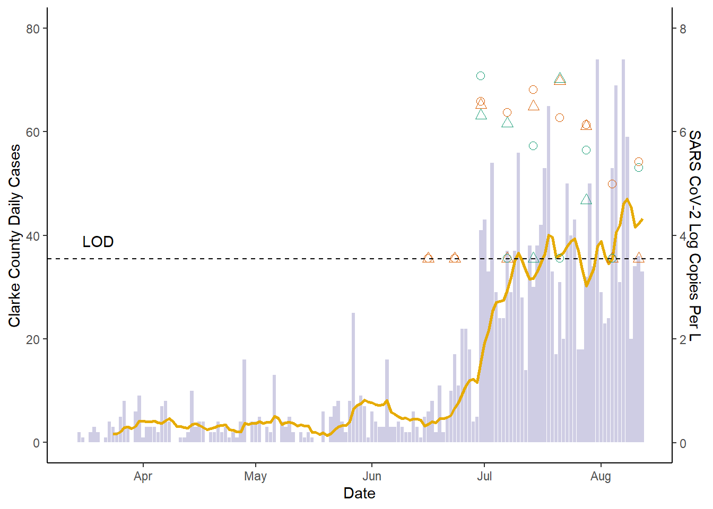

Load all required libraries.
## Warning: package 'tidyverse' was built under R version 3.6.3## -- Attaching packages ---------------------------------------------------------------------------- tidyverse 1.3.0 --## v ggplot2 3.3.2 v purrr 0.3.4
## v tibble 3.0.3 v dplyr 1.0.0
## v tidyr 1.1.0 v stringr 1.4.0
## v readr 1.3.1 v forcats 0.5.0## Warning: package 'ggplot2' was built under R version 3.6.3## Warning: package 'tibble' was built under R version 3.6.3## Warning: package 'readr' was built under R version 3.6.3## Warning: package 'dplyr' was built under R version 3.6.3## Warning: package 'forcats' was built under R version 3.6.3## -- Conflicts ------------------------------------------------------------------------------- tidyverse_conflicts() --
## x dplyr::filter() masks stats::filter()
## x dplyr::lag() masks stats::lag()## Warning: package 'plotly' was built under R version 3.6.3##
## Attaching package: 'plotly'## The following object is masked from 'package:ggplot2':
##
## last_plot## The following object is masked from 'package:stats':
##
## filter## The following object is masked from 'package:graphics':
##
## layoutRead in raw data from RDS.
Make a few small modifications to names and data for visualizations.
final_data <- raw_data %>% mutate(log_copy_per_L = log10(mean_copy_num_L)) %>%
rename(Facility = wrf) %>%
mutate(Facility = recode(Facility,
"NO" = "WRF A",
"MI" = "WRF B",
"CC" = "WRF C"))Create the plot:
1)Start with a basic bar plot to show Department of Public Health Data
2)Layer a line plot to show 7-day moving average
3)Layer a scatterplot to show wastewater data
4)Layer a horizontal line and annotation to indicate the limit of detection (LOD) for RT-qPCR
5)Finish with asthetics (note legend asthetics are split to maintain theme_classic)
clean_plot <- final_data %>% ggplot() +
geom_bar(aes(x = date, y = new_cases_clarke), stat = "sum", alpha = 0.35, fill = "#7570B3", show.legend = FALSE)
clean_plot <- clean_plot +
geom_line(aes(x = date, y = X10_day_ave_clarke), size = 1, color ="#E6AB02") +
geom_point(aes(x = date, y = log_copy_per_L*10, color = target, shape = Facility), size = 2.5) +
geom_hline(yintercept = 35.5, linetype = "dashed") +
annotate("text", x = as.Date("2020-03-20"), y = 39, label = "LOD")
clean_plot <- clean_plot +
scale_y_continuous(limits = c(0,80), breaks = seq(0, 80, 20),
sec.axis = sec_axis(~. / 10, name = "SARS CoV-2 Log Copies Per L")) +
ylab("Clarke County Daily Cases") + xlab("Date") +
theme_classic() + guides(color=guide_legend("SARS CoV-2 Target"))
clean_plot <- clean_plot +
theme(legend.position = "none") #generating tidy legend as png file
clean_plot <- clean_plot + scale_color_manual(na.translate = FALSE, values = c("#1B9E77", "#D95F02")) + scale_shape_manual(na.translate = FALSE, values = c(1:2))
clean_plot## Warning: Removed 2 rows containing non-finite values (stat_sum).## Warning: Removed 10 row(s) containing missing values (geom_path).## Warning: Removed 143 rows containing missing values (geom_point).
Save the plot!
## Saving 7 x 5 in image## Warning: Removed 2 rows containing non-finite values (stat_sum).## Warning: Removed 10 row(s) containing missing values (geom_path).## Warning: Removed 143 rows containing missing values (geom_point).